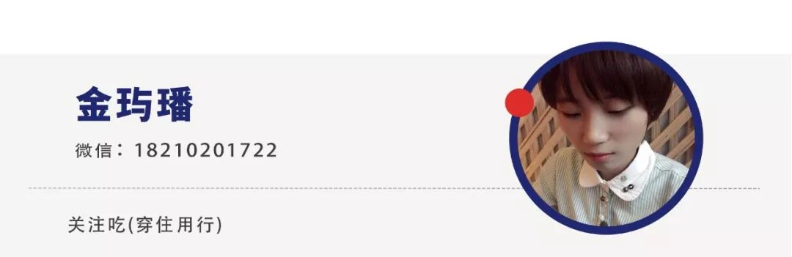

石墨文档吴冰：半数员工被困武汉，在疫情中央迎战远程办公风口
原文链接 备份链接 燃财经（ID:rancaijing）原创 作者 | 苏琦 编辑 | 周昶帆 今年的疫情来得十分突然，却将包括石墨文档在内的远程办公行业向前推进了一大步。 很多人不知道的是，石墨文档是一家在武汉成立，直到现在仍有一半员工 …
燃财经（ID:rancaijing）原创
作者 | 金玙璠
编辑 | 魏佳
受疫情影响，在节后开工首周，超过两亿职场人在线办公。这也让远程办公这个不算热门的行业迅速登上了风口，其中，远程视频会议成为强刚需。
2月13日，“燃财经创新经济战疫计划”推出线上沙龙第二期——《穿越疫情，企业服务创业者该怎么做？》，金沙江创投主管合伙人朱啸虎、石墨文档创始人兼CEO吴冰、小鱼易连联合创始人兼CEO袁文辉围绕着企业服务的话题，在燃财经社群里进行了分享。
袁文辉介绍，疫情之下，政府、学校、企业对视频远程沟通协作的需求出现爆炸性增长，从大年初一至今，小鱼易连已经先后收到三波需求，分别来自有大量远程协作沟通需求的各级政府、卫健委和医院；需要线上授课的教培机构；不得不在家办公的企业。
由于远程协作和交流沟通的需求暴涨，腾讯、阿里、头条等巨头全都进入，且不惜重金，面对这样的竞争，袁文辉认为，巨头的免费策略非常好地教育了整个市场，对行业的发展来说，是一个巨大的催化剂。
不过，疫情期间，即便是风口上的行业，也要思考怎样健康活下去的问题，袁文辉的经验是，一方面要把能省的费用都省掉，另一方面，小鱼易连坚持原有策略，通过利润杠杆鼓励渠道打预付款，不断补充现金资源。
而对于“云视频应用这个细分赛道，疫情带来的是风口还是昙花一现”、“创业者应该如何把握这次机会”等问题，袁文辉也在社群中做了分享。
以下是袁文辉的分享内容，经燃财经整理：
我原以为，只有To C业务才有可能出现急剧增长的情况，小鱼易连做的是To B业务，很难遇到一个快速增长的机会。但是由于这次突发的疫情，政府、学校、企业对视频远程沟通协作的需求到了爆炸性增长阶段。
在过去四年里，小鱼易连专注于解决各行业在视频应用上的痛点，尤其是针对政府部门业务流程的提升，以及各部门之间的沟通协作，应用的场景如互联网庭审、检察院的远程立案等。
最近一段时间，大家因为疫情不得不在家学习、在家办公，腾讯的企业微信、腾讯会议，阿里的钉钉，头条的飞书的使用量实现了爆炸性增长，小鱼易连和这些应用的侧重点不同。音视频只是这些应用的一小部分功能，小鱼的方案与之互补，针对的是对云视频场景和品质有更高要求的客户。
从大年初一开始，小鱼后台就收到了业务告警。第一波需求来自疫情开始后，有大量远程协作沟通需求的各级政府、卫健委和医院。去年小鱼的方案，包括硬件、云平台和SaaS服务，都已经进入到很多部委省厅和各地区县。
也正是因为政府的第一波需求，我们迅速扩展后台的资源，每天都需要匹配加倍的服务器，才能适应业务发展的需求。
紧接着到了年初三、年初四，第二波需求来自教培机构。他们有很多的课程，另外很多教委、教育局、教育厅等都需要解决放假结束之后的上课问题，他们的沟通都从线下紧急搬到了线上。
第三波需求来自2月10日之后不得不在家办公的企业的需求。经过这三波需求的洗礼，我们云服务后台的用户已经达到了千万级别以及百万并发的级别。
现在回过头来看，去年我们内部升级和打造的产品，就已经做好了从SMB中小型客户转向大型客户，包括政务、央企、国企和头部民企的准备，才能在今年应对突发的疫情和巨大的需求量。过去这几天，很多人吐槽“到处卡顿”。我们作为一个初创企业，资源不如巨头丰富，但是靠自己多年的技术基础，为多省的卫健委以及区县政府提供了全套的疫情管控解决方案。
因为教育用户的流量成本过高，小鱼作为初创公司，无法支撑海量的流量费用去免费提供服务，因此只服务两类用户，一是通过和其他运营商合作，义务服务一些学校的线下小班课；二是专注做初三、高三学生的线上教育，因为这部分学校有预算，愿意为高品质的服务付费。
此次疫情，我们针对企业用户提供了免费的100方云会议室资源，很多用户在使用完后又采购了小鱼其他的云资源。从目前来看，今年第一季度的销售额会是去年第一季度的两到三倍，当然，也要看硬件供应链恢复的情况。希望疫情尽快退去，我们就可以全力生产。
***春节期间几乎每天都需要做扩容***
燃财经：疫情之下，很多公司担心现金流出问题，尤其是To B项目。你们现金流状况怎么样？特殊时期怎么开源节流？
袁文辉：小鱼易连的To B业务在去年实现了非常大的突破，尤其是在政府项目上。我们从突破部委省厅开始，再通过老客户找到有类似需求的客户，不断地扩大圈子。所以我们能够拿下大概十几个部委，小鱼的云视频业务平台也进入到了全国各地几百个省厅的业务流程中。
疫情之下，每个公司的CEO都应该担心现金流问题。我们对这一点一直是谨慎的，创业公司的实力和资源有限，能省的每一分钱都希望省下来。我们今年年初制定的计划是各方面费用比去年减少至少10%。那时我们没有料到疫情会出现，但正是因为谨慎的经营态度，让我们能够在疫情期间处于一个比较有把握的状态。
燃财经：你们的商业模式是什么？硬件、软件、服务的构成是什么样的？
袁文辉：我们的商业模式和一般有硬件业务的厂商不太一样。传统做硬件的厂商，一般都需要给代理商、经销商账期，因此需要一大笔周转资金来维持业务运转。小鱼在创业初期就制定了独特的渠道策略，通过利润杠杆鼓励渠道打预付款。这种方式让我们的现金流状况非常健康。
现在在疫情期间，我们一样要节省费用，能省的地方都省掉。我们原来在全国28个城市都有销售代表处，这次疫情来了之后，员工全部在家办公，包括我、各地的销售、研发都在家办公。我们干脆就把全国各地已经到期的办公室取消掉了，能够节省很大一部分费用。另一方面，我们的销售实际是在增长的，所以我们继续原有策略，让销售回款，不断补充现金资源。
做To B业务，很难先靠免费获取客户，再把这些用户转化成付费用户，至少在中国市场，我认为挑战很大。所以我们从创业初期，就考虑到了商业化路径。中国市场的用户，更倾向于购买看得见摸得着的东西，因此我们采用了一个比较独特甚至奇葩的方法，以硬件来推动SaaS服务，把SaaS服务和硬件打包，通过渠道推给终端客户。
如果第一年直接向客户卖SaaS服务是很难成交的，但如果卖看得见摸得着的硬件，同时告诉用户第一年免费提供云服务，用户就感觉占便宜了，等使用产品一年后，感受到工作效率的提升，节省了出差的费用，第二年续费就是很简单的事情。这种模式借助了中国传统线下渠道的好处，同时也等到了用户被教育完毕、体验完毕，能够付费线上SaaS服务的窗口。
燃财经：短时间内需求激增，一定会带来一些之前没有遇到过的难题，你们是如何解决的？
袁文辉：短时间内需求是暴涨的，目前付费用户部分每天的流量，相当于过去一两个月的流量。当然，由于资源有限，我们对免费客户能够提供的服务也有限。如果没有任何限制地为客户免费提供服务的话，我估计现在应该是千万并发的需求，用户数也会是大几千万甚至过亿的级别。
一方面，当需求剧增，我们只能不断地购买更多的云资源，不断去扩容。所以研发团队在春节期间比平时更忙，几乎每一天都需要做扩容。
另外一方面的挑战，来自对品质要求很高的客户。他们除了需要SaaS服务以外，还需要专门的视频会议的终端，这就给供应链带来很大挑战。云服务敲敲键盘就可以获取更多，但是硬件需要原材料，需要工厂把它制造生产出来。而由于疫情，工厂开工延后，我们也在想各种办法，尽快让供应链运作起来，才能满足用户增长的需求。
在工厂开工之前，我们的供应链团队在春节期间也都忙碌起来了，提前下订单或者提前拿货，做好开工的计划。
燃财经：现在对小鱼易连来说最重要的事情是什么？在机会之下把握好节奏很重要，对未来你们是如何规划的？
袁文辉：对于小鱼易连来说，现在最重要的事，依然是服务好核心客户，尤其是标杆客户。他们对品质、对服务的可靠性、对于用户体验的要求非常高。平时我们开一个视频会议，如果突然断了，断了就断了，但是如果是法庭审判的过程中，突然发生这种问题或者卡顿，证人的证词少了一部分，那是非常严重的后果。
我现在总和团队说，现在的一天相当于过去的一年。因为以前我们在拓展很多客户的时候，可能花一年的时间都未必能够转化一个客户，但是正是因为最近的变化，我们再去拜访客户，不管区县政府还是民企，基本上是当天做演示做讲解，第二天就开始试用，甚至开始走合同，这在以往是不可想象的。正是因为他们有了现在在家办公的体验，所以更容易接受很多方案。
实际上现在的业务增长，对我们的公司和流程来说，不算是什么太大的挑战，当然在SaaS的扩容上还需要研发团队付出很多了。我们全公司员工在2019年增长了100%，从原来200多人增长到了500多人，本来就想着在2020年要打一场硬仗的，结果遇到了新的形势的变化，也刚好碰上了这个行业的催化剂。
***巨头的免费策略非常好地教育了市场***
燃财经：你怎么看Zoom这个工具？
袁文辉：Zoom是一个非常优秀的云视频工具。我和他们的团队和创始人之间，大家都是互相尊重和认可的，我们两个月前还一起探讨了怎么合作。Zoom在美国相当的成功，市值已经达到了200多亿美元。
我们和Zoom的相同之处是，都提供视频会议的解决方案，不同之处是，Zoom是为美国的客户设计和不断迭代的，小鱼是为中国市场准备的；美国的用户更多的是在家办公，不管是CEO还是一线的员工都是平等地沟通对话，但是在中国，更多的企业领导和下面员工开会的时候，需要坐在会议室里，有专业的硬件，也需要保证更好的会议质量。
另外的不同之处是，在美国，大家开会都是用邮件预约，在中国，大家开会是用微信预约，这需要根据市场、根据客户需求的不同，在产品上体现出差异。
在技术上，实际大家都做的很好。美国的网络相对较好，所以它优化的程度、针对网络丢包适应的要求，和中国不一样。中国有七八张互联网，不同的运营商之间的带宽是有限的，网络丢包经常出现，小鱼在抗丢包能力上，在同行中是做得比较优秀的。
燃财经：在云视频会议领域，有很多实力雄厚的玩家都在争抢这一次机会，你会担心巨头利用免费策略抢占市场吗？
袁文辉：疫情期间大家在家办公，远程协作和交流沟通的需求是暴涨的，所以巨头全都进来了，包括腾讯、阿里和头条都进入到这个领域，而且每一家都是不惜重金。我估计每一家光是云服务的流量费都是千万甚至是以亿为单位的。当然，他们的市场品牌的影响力是巨大的，但是我并没有觉得他们会抢占我们的市场，因为我们做的事情跟他们不一样。
当然也有共同点，大家都有纯SaaS服务，让用户通过手机和电脑就可以进行视频会议。但是我们瞄准的是有价值的客户，像大B、教育机构、各地的100强，他们对品质和稳定性的要求更高，并且在疫情过去后，还会继续使用有价值的服务和硬件。
燃财经：眼下的机会是真风口还是假风口，会有持续需求还是昙花一现，你的判断是什么？
袁文辉：实际上，巨头的免费策略非常好地教育了整个市场，让更多的人体验到了云视频的便利与价值，但是现在在家办公的人群，等到在疫情过后真正使用视频会议时会感受到，还是需要一个专业的视频终端来提升会议质量。这时候我们就处于一个非常有利的地位。
现在有报道说，每天有2亿人用钉钉远程办公，腾讯紧急扩容10万个服务器用于远程会议。我个人认为，绝大部分需求在疫情过去之后都会消失。其中最大的用户群是中小学生，他们在疫情过后会回到学校上课，不再使用直播的模式，另外一部分是现在在家办公的人群，等到疫情过去还是会回到办公室，每天用软件开会的需求会急剧减少。
但是，也会有很大一部分用户，体验到好处之后，如果还有异地沟通协作的需求，会继续采用云视频的技术。所以，这次是一个对全社会教育的机会，对整个市场发展来说，绝对是一个巨大的催化剂。
*****疫情之下*****
*****想通过免费流量获取大量客户不可能*****
燃财经：最近《238家SaaS企业公开信》在网上刷屏，其中提到在线化经营需求的爆增，触发了空前的运营成本压力，而每家企业还要承受各项规划收入大幅萎缩的残酷现实。对于这些企业，你有什么应对建议？
袁文辉：是的，疫情的出现让所有的企业都面临巨大的挑战，尤其做To B服务的，还在起步阶段的，服务对象主要是SMB的这些企业。在未来的几个月里，大家的SMB客户自身都面临生存压力，付费难度很大。在这种情况下，我们就需要开源节流，把能节省的费用都砍掉。像我们还是比较幸运的，因为我们提前做了变革，转向了更大型的客户，他们的付费能力更强。
假如我们能够有机会找到一群真正有付费能力的大客户，就有更好的生存下去的机会。短期之内，我认为一定要抓大放小，尽量拿住有支付能力、有支付意愿的客户，把他们服务好。而像以往通过免费流量获取大量客户的想法，在这个阶段是绝对不能有的，因为这部分用户自身的生存还是个巨大的问题，不可能有钱支持你往下发展业务的。
小鱼易连就是聚焦于有钱的客户，聚焦于有支付能力的客户，给他们创造价值，这样我们的业务才能有希望进一步往前发展。对于付费意愿不强的客户，我们在这个阶段应该放弃，同时要大力压缩开支。
燃财经：除了云视频，你认为还有哪些企业服务领域的细分赛道近期能得到大发展？
袁文辉：像石墨文档这个赛道、电子签名，这种能够真正解决大家远程办公中实际问题的赛道，肯定会有很好的发展。这一次的疫情只是促使大家尝试体验更好的解决方案，而事实上，即便在没有疫情的情况下，也能真正解决痛点，为企业带来额外价值的行业和赛道肯定都会有巨大的发展。
*部分提问来自燃财经社群群友。引用沙龙内容，请标注来源于燃财经“创新经济战疫计划”线上沙龙。



你尝试云视频会议了吗？体验如何？
欢迎在评论区留下你的故事，文章转载请点击公众号菜单“转载合作”。
一手资讯/硬核报告/每日红包/线下活动！就差你了！快加微信rancaijing02回复“读者”一键上车！


原文链接 备份链接 燃财经（ID:rancaijing）原创 作者 | 苏琦 编辑 | 周昶帆 今年的疫情来得十分突然，却将包括石墨文档在内的远程办公行业向前推进了一大步。 很多人不知道的是，石墨文档是一家在武汉成立，直到现在仍有一半员工 …
原文链接 备份链接 来源：图虫 记者：卢奕贝 编辑：牙韩翔 “ 疫情影响之下全球防护设备，尤其是口罩供不应求。这让所有口罩生产商的工厂都开始忙碌起来。 ” 一家名为Kolmi Hopen的公司突然收到了一大笔订单——5亿个口罩。 这家位于 …
原文链接 备份链接 燃财经（ID:rancaijing）原创 作者 | 唐亚华 编辑 | 魏佳 “创业企业要警惕，不要倒在疫情结束后的‘倒春寒’上。”在燃财经举办的线上沙龙上，金沙江创投主管合伙人朱啸虎对创业者发出预警。他表示，疫情结束 …
原文链接 备份链接 未来楼市调控松绑预期渐浓。 记者 | 王晓珊 编辑 | 盛倩玉 小豆 “销售旺季的时候，每个人每个月也就是接待20-30批次的客户，一场直播下来，可以加到40批的客户，相当于一个半月的客户量，线上直播还是有效果。”一位 …
原文链接 备份链接 “ - 疫 情 之 下 - 其实我内心很挣扎，有钱不挣这是傻子行径。但我明白这是非常时期，作为普通人，我们既然帮不上忙，那就选择不添乱吧！ ” 1 1月24日是大年三十，终于靠到了年根儿，孩子们的作业也已经完成了大半， …